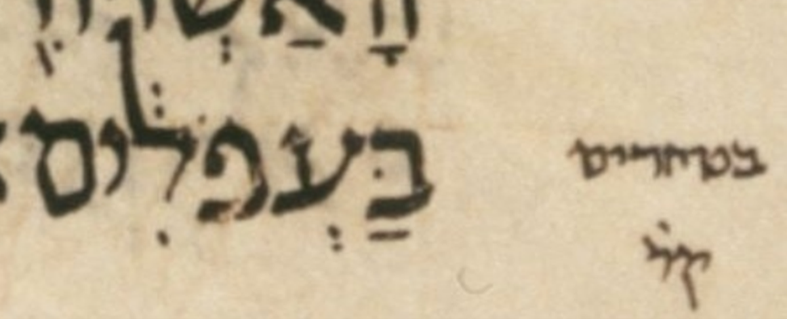

| n | 31 |
| citation:book | 1Sam |
| citation:c | 5 |
| citation:v | 6 |
| citation:position | 9 |
| author:name | Ben Denckla |
| author:mail | bdenckla@alum.mit.edu |
| author:confirmed | true |
| description | Note that while creating the pointed qere, the transcriber added a dagesh to tet |
| lc:folio | Folio_152B |
| lc:column | 1 |
| lc:line | 26 |
| lc:credit | Credit: Sefaria.org. |
| reftext | בַּטְּחֹרִ֔ים |
| refuni | bet dagesh patah tet dagesh sheva het holam resh hiriq zaqef-qatan yod final-mem |
| changetext | בַּטְּחֹרִ֔ים |
| changeuni | bet dagesh patah tet dagesh sheva het holam resh hiriq zaqef-qatan yod final-mem |
| notes:note | The manuscript’s pointed ketiv (MPK) is בַּעְפֹלִ֔ים. |
| notes:note-2 | The MPK’s ע does not carry a dagesh for the qere’s ט, perhaps because that would be illegal. |
| notes:note-3 | Same issue, indeed same word modulo accent, six verses later, in 5:12. |
| notes:note-4 | Dotan remarks, in his Foreword to BHL (page xx): |
| notes:note-5 | Another example [of a point CEN] is an ʿayin of the ketiv that cannot carry a dagesh that is due in the qere, as in the manuscript in Deut. 28:27 in the [body] text וּבַעְפֹלִים and in the margin ק̇ ובטחרים; in the printed edition a dagesh was added[, yielding] וּבַטְּחֹרִים. |
| notes:note-6 | [The terminology CEN (created ex nihilo) is mine, not Dotan’s.] |
| notes:note-7 | [In this quote, Dotan omits the accent (zaqef qatan) on the ל of וּבַעְפֹלִים and on the ר of וּבַטְּחֹרִים, perhaps because it is not germane to the topic at hand.] |
| notes:note-8 | [Note that dt28:27 is not a-noted in WLC! (*W/B/(PLYM **W./BA/+.:XORI80YM)] |
| transnotes:transnote:action | Add |
| transnotes:transnote:type | a |
| transnotes:transnote:beforetext | XXX fill me in beforetext |
| status | Pending |
| type | NoTextChange |